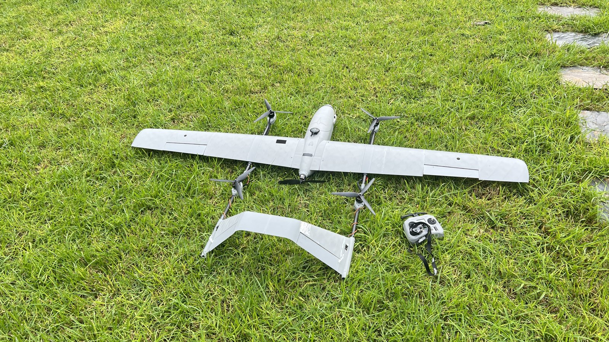

Air / UAV & UAS
Fixed-wing mission and payload integration
Connect navigation, telemetry and payload interfaces for fixed-wing missions.
Mission and interface integration
Platform context from the supplied project collection; no performance metric is implied.
My contribution
Configured Pixhawk 6C missions and worked on a Pixhawk 6X aircraft for an approximately 4 kg payload use case. Integrated sensors, telemetry and GNSS/RTK using Mission Planner and QGroundControl workflows.
Delivered work
Mission configuration and interface integration with preparation for further testing.
Scope and validation
The 4 kg payload figure describes the project use case.